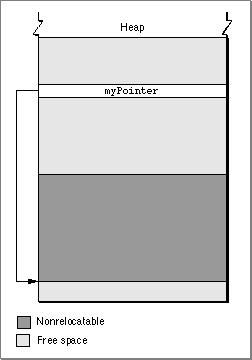
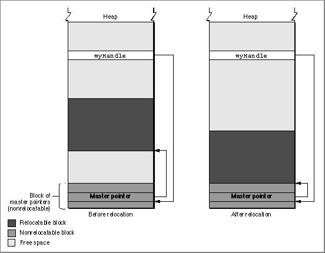
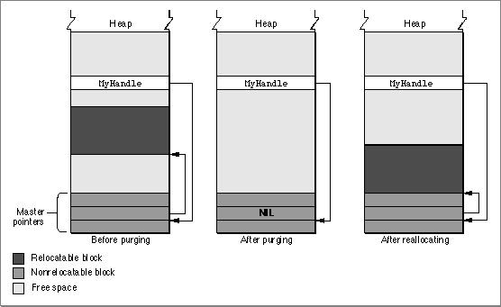

Memory Blocks
You can use the Memory Manager to allocate two different types of blocks in your heap: nonrelocatable blocks and relocatable blocks. A nonrelocatable block is a block of memory whose location in the heap is fixed. In contrast, a relocatable block is a block of memory that can be moved within the heap (perhaps during heap compaction). The Memory Manager sometimes moves relocatable blocks during memory operations so that it can use the space in the heap optimally.The Memory Manager provides data types that reference both relocatable and nonrelocatable blocks. It also provides routines that allow you to allocate and release blocks of both types.
Nonrelocatable Blocks
To reference a nonrelocatable block, you can use a pointer variable, defined by thePtrdata type.TYPE SignedByte = -128..127; Ptr = ^SignedByte;A pointer is simply the address of an arbitrary byte in memory, and a pointer to a nonrelocatable block of memory is simply the address of the first byte in the block, as illustrated in Figure 2-7. After you allocate a nonrelocatable block, you can make copies of the pointer variable. Because a pointer is the address of a block of memory that cannot be moved, all copies of the pointer correctly reference the block as long as you don't dispose of it.Figure 2-7 A pointer to a nonrelocatable block

You can allocate a nonrelocatable block of memory by calling the Memory Manager function
NewPtr. The Venn Diagrammer application uses the following line of code to allocate a new window record each time the user creates a new document window:myPointer := NewPtr(sizeof(WindowRecord));Here,myPointeris of typePtr. (To see this line of code in context, look at Listing 6-6 on page 117.)Relocatable Blocks
To reference relocatable blocks, the Memory Manager uses a scheme known as double indirection. The Memory Manager keeps track of a relocatable block internally with a master pointer, which itself is part of a nonrelocatable master pointer block in your application heap.When the Memory Manager moves a relocatable block, it updates the master pointer so that it always contains the address of the relocatable block. You reference the block with a handle, defined by the
- Note
- The Memory Manager allocates one master pointer block (containing 64 master pointers) for your application at launch time, and you can call the
MoreMastersprocedure to request that additional master pointer blocks be allocated.Handledata type.TYPE Handle = ^Ptr;A handle contains the address of a master pointer. The left side of Figure 2-8 shows a handle to a relocatable block of memory located in the middle of the application heap. If necessary (perhaps to make room for another block of memory), the Memory Manager can move that block down in the heap, as shown in the right side of Figure 2-8.Figure 2-8 A handle to a relocatable block

Master pointers for relocatable objects in your heap are always allocated in your application heap. Because the blocks of master pointers are nonrelocatable, it is best to allocate them as low in your heap as possible. You can do this by calling the
MoreMastersprocedure when your application starts up.You can allocate a relocatable block of memory by calling the Memory Manager function
NewHandle. The Venn Diagrammer application uses the following line of code to allocate a new document record each time the user creates a new document window:myHandle := MyDocRecHnd(NewHandleClear(sizeof(MyDocRec)));Here,myHandleis of typeMyDocRecHnd. TheNewHandleClearfunction is a variant ofNewHandlethat clears all bytes in the new block to 0. (To see this line of code in context, look at Listing 6-6 on page 117.)Whenever possible, you should allocate memory in relocatable blocks. This gives the Memory Manager the greatest freedom when rearranging the blocks in your application heap to create a new block of free memory. In some cases, however, you may be forced to allocate a nonrelocatable block of memory. When you call the Window Manager function
NewWindow, for example, the Window Manager internally calls theNewPtrfunction to allocate a new nonrelocatable block in your application partition. You need to exercise care when calling Toolbox routines that allocate such blocks, lest your application heap become overly fragmented.Using relocatable blocks makes the Memory Manager more efficient at managing available space, but it does carry some overhead. As you have seen, the Memory Manager must allocate extra memory to hold master pointers for relocatable blocks. It groups these master pointers into nonrelocatable blocks. For large relocatable blocks, this extra space is negligible, but if you allocate many very small relocatable blocks, the cost can be considerable. For this reason, you should avoid allocating a very large number of handles to small blocks; instead, allocate a single large block and use it as an array to hold the data you need.
As you have seen, a heap block can be either relocatable or nonrelocatable. The designation of a block as relocatable or nonrelocatable is a permanent property of that block. If relocatable, a block can be either locked or unlocked; if it's unlocked, a block can be either purgeable or unpurgeable. These attributes of relocatable blocks can be set and changed as necessary. The following sections explain how to lock and unlock blocks, and how to mark them as purgeable or unpurgeable.
Locking and Unlocking Relocatable Blocks
Occasionally, you might need a relocatable block of memory to stay in one place. To prevent a block from moving, you can lock it, using theHLockprocedure. Once you have locked a block, it won't move. Later, you can unlock it, using theHUnlockprocedure, allowing it to move again.In general, you need to lock a relocatable block only if there is some danger that it might be moved during the time that you read or write the data in that block. This might happen, for instance, if you dereference a handle to obtain a pointer to the data and (for increased speed) use the pointer within a loop that calls routines that might cause memory to be moved. If, within the loop, the block whose data you are accessing is in fact moved, then the pointer no longer points to that data; this pointer is said to dangle.
Using locked relocatable blocks can, however, hinder the Memory Manager as much as using nonrelocatable blocks. The Memory Manager can't move locked blocks. In addition, except when you allocate memory and resize relocatable blocks, it can't move relocatable blocks around locked relocatable blocks (just as it can't move them around nonrelocatable blocks). Thus, locking a block in the middle of the heap for long periods can increase heap fragmentation.
Locking and unlocking blocks every time you want to prevent a block from moving can become troublesome. Fortunately, the Memory Manager moves unlocked, relocatable blocks only at well-defined, predictable times. In general, each routine description in Inside Macintosh indicates whether the routine could move or purge memory. If you do not call any of those routines in a section of code, you can rely on all blocks to remain stationary while that code executes.
Purging and Reallocating Relocatable Blocks
One advantage of relocatable blocks is that you can use them to store information that you would like to keep in memory to make your application more efficient, but that you don't really need if available memory space becomes low. For example, your application might, at the beginning of its execution, load user preferences from a preferences file into a relocatable block. As long as the block remains in memory, your application can access information from the preferences file without actually reopening the file. However, reopening the file probably wouldn't take enough time to justify keeping the block in memory if memory space were scarce.By making a relocatable block purgeable, you allow the Memory Manager to free the space it occupies if necessary. If you later want to prohibit the Memory Manager from freeing the space occupied by a relocatable block, you can make the block unpurgeable. You can use the
HPurgeandHNoPurgeprocedures to change back and forth between these two states.Once you make a relocatable block purgeable, you should subsequently check handles to that block before using them if you call any of the routines that could move or purge memory. If a handle's master pointer is set to
- IMPORTANT
- A block you create by calling
NewHandleis initially unlocked and unpurgeable. As a result, you don't have to worry about the block being purged unless you make the block purgeable.
NIL, then the Operating System has purged its block. To use the information formerly in the block, you must reallocate space for it (perhaps by calling theReallocateHandleprocedure) and then reconstruct its contents (for example, by rereading the preferences file). Figure 2-9 illustrates the purging and reallocating of a relocatable block. When the block is purged, its master pointer is set toNIL. When it is reallocated, the handle correctly references a new block, but that block's contents are initially undefined.Figure 2-9 Purging and reallocating a relocatable block
